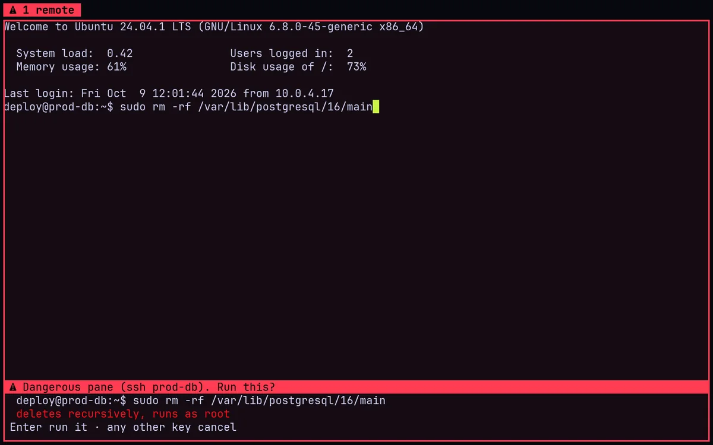

01⚠ ssh prod-db
Danger mode
A pane on a production host, a root shell or a folder you mark turns red. Type rm -rf or git push --force there and Enter waits for a second Enter. Ctrl+Shift+D marks any pane.